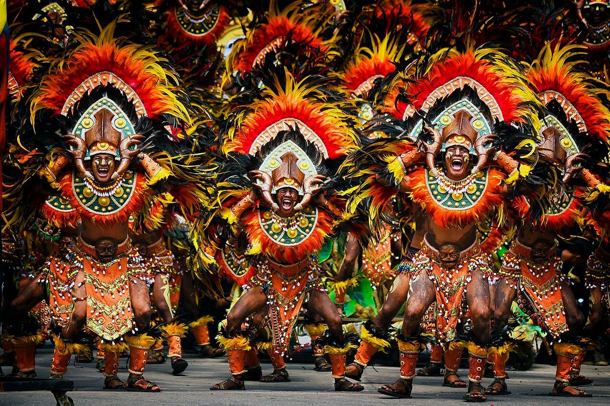
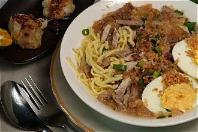
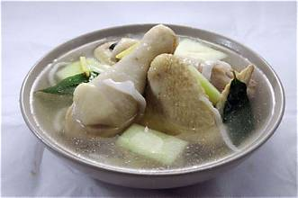
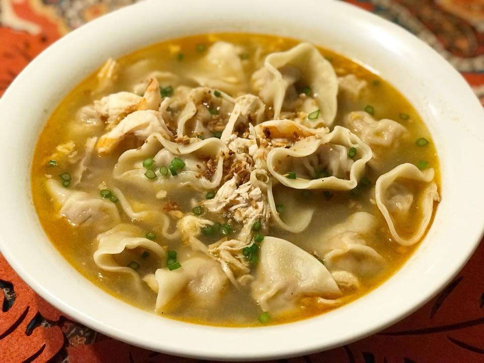

Get to Know Iloilo

A City Full of Stories
Every corner of Iloilo tells a story of its rich past, vibrant culture, and enduring traditions. From centuries-old churches and historic landmarks to colorful festivals and cherished local delicacies, the city preserves the heritage and spirit of the Ilonggo people. Blending history with modern charm, Iloilo invites everyone to discover the stories, flavors, and traditions that make it truly unforgettable.
Famous Dishes of Iloilo

LOCAL FAVORITE
La Paz Batchoy
Taste the heart of Iloilo in every bowl! La Paz Batchoy is a famous noodle soup filled with pork, liver, and flavorful broth, topped with crispy garlic, spring onions, and crushed chicharon. One spoonful and you'll understand why locals love it!

COMFORT FOOD
Chicken Binakol
Enjoy a warm bowl of Chicken Binakol! This comforting Filipino soup combines tender chicken, coconut water, young coconut meat, and vegetables for a delicious tropical flavor. Every spoonful brings warmth and a taste of home.

ILONGGO CLASSIC
Pancit Molo
Small dumplings, big flavor! Pancit Molo is a beloved Iloilo specialty featuring savory meat-filled dumplings in a warm, flavorful broth. It's the perfect comfort food for anyone craving something delicious and satisfying.
Pasalubong Tips
No trip to Iloilo is complete without bringing a little of its sweetness back home. The city is well loved for its baked treats, so look for local favorites like Biscocho, Butterscotch, and Barquillos, which keep well, travel easily, and are perfect for sharing with family, friends, and coworkers. Pair them with a cup of coffee or tea for a taste of Ilonggo hospitality wherever you are. Before you leave, treat yourself to one last bowl of La Paz Batchoy or Pancit Molo, so your Iloilo adventure ends with the flavors you will miss the most.